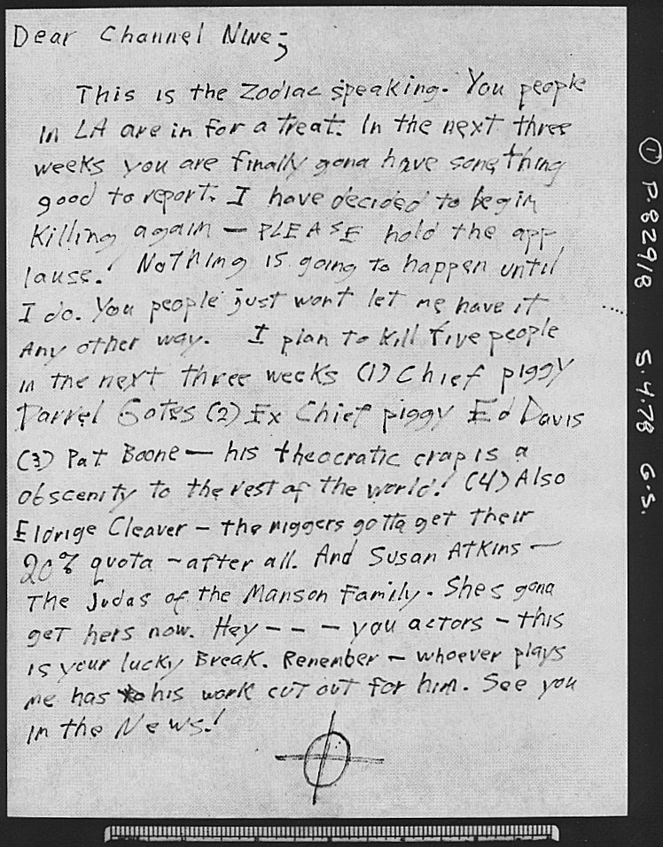

|
The Channel Nine Letter |
|
|
|
 |
|
|
|
Courtesy
of Los Angeles Police Department and Tom Voigt. We are grateful to Rick Morton for his discovery of
this letter in the LAPD archives. |
|
|
|
Analysis of the
Channel Nine Letter |
|
|
|
This
is a letter that clearly is written in anger and in a hurry to get
it in the mail. It has been some four years since Zodiac has last
written so there would very well be some handwriting changes due
to age. And, no doubt, some could be contrived. Some old traits
would also be evident. Remember, Zodiac makes the rules on how he
does anything. And then he changes the rules - because
he can!
It is all part of his braggadocio of being too clever to get
caught. |
|
|
|
"Dear
Channel Nine;" This is classic Zodiac. ("Dear
Editor", "Dear Melvin", etc.) Zodiac, in most
cases, did not end his opening remark, "This is the Zodiac
speaking," with a punctuation mark. An exception to this is
his 10/13/69 letter where he does
use a period. (It has been said that Zodiac never
used a person's name. Tell that to Paul Avery, Herb Caen, Melvin
Belli and Count Marco Spinelli.) In Zodiac's 07/24/70 letter to the
San Francisco Chronicle he wrote, "you people [in
S.F.]" Here is written, "You people in LA" and on line 7, "You people". |
|
|
|
A
Zodiac trait is that he will write some things only once, creating
unique "clews." Other times he will be consistently
inconsistent, even within the same letter. Zodiac has spelled the
word "bus" both correctly and as "buss." In
Zodiac's 04/26'70 letter he writes "butons" on line 6 but on
line 8 it is "Buttons." The writer of this
letter misspells "gona" twice but uses "going"
once, also, and it is correctly spelled. |
|
|
|
When
Zodiac printed, sometimes the letters in a word would connect or
touch each other. In the above letter in line 2 note the word
"three" has letters touching. In line 4 note the words
"report" and "begin" have letters that touch.
The word "of" in line 12 and "after" in line
14 also touch. The "s" probably does touch the
"y" in the word "plays" in line 17. The "yo"
in the word "you" is very close in line 18. |
|
|
|
In
Zodiac's 07/31/69 letter the word "parT" ends with an upper
case "T". Two words in this letter end with a capital
"T". Zodiac has separated combined words like "him
self" (01/29/74.) In line 3 above is written "some
thing". Zodiac often did not hyphenate words at the end of a
line. Nor would he separate the word properly. See
"applause" in lines 5 and 6 above. |
|
|
|
Another
Zodiac writing trait is that most of the time he writes out
numbers. In the above letter the word "three" is written
out twice and "five" is written out once. |
|
|
|
When
threatening others, Zodiac refers to them as "people." On
08/01/69 he wrote, "I will kill a dozen people." On 04/20/70 he
wrote, "I have killed ten people." In the above letter it says,
"I plan to kill five people . . . ." Zodiac had a fondness for
using numbers when explaining some things. This is evident in
the above "kill list" - which he never followed up on. Zodiac
never followed up on certain threats, also. |
|
|
|
On
07/31/69 Zodiac threatened to kill an exact number of people (12)
and when (weekend of the first of August.) Above, the letter
writer lists an exact number of people to kill (5) and when (in
the next three weeks.) |
|
|
|
The
first person listed that the letter writer said he was going to
kill was "Chief piggy Darrel Gates". Los Angeles Police Chief
Daryl Gates (yet another misspelling by the letter writer)
became the Chief at the end of March 1978 replacing the number
two person on the list to kill, "Ex Chief piggy Ed Davis". This
letter is postmarked May 2, 1978. According to several
statements, Daryl Gates had been the head
of the Charles Manson investigation under Chief Davis. This could clearly show a connection between the
letter writer and Manson as Gates and Davis would both have
naturally been considered as enemies by the Family. |
|
|
|
Manson,
Bruce Davis and the Family constantly used the term "Piggy" to
not only refer to the police but also to rich people and those
they considered undesirable. Many people during that era spelled
the word "piggie". The Manson Family, in many of their writings,
and this letter writer both spelled it "piggy". |
|
|
|
Zodiac
repeats phrases in his letters. In his 12/20/69 letter he writes,
"please help me" three times and "I cannot"
twice. In the 07/26/70 letter
"I shall" is written seven times, "Others shall,"
is written twice along with "Others will" and
"Others I shall" once each. The writer of the Channel Nine
letter uses the phrase "In the next three weeks" twice. |
|
|
|
Zodiac used a "box" style of "f" in the word
"fire (truck)" in his 11/09/69 letter. In the above
letter the same style of "f" is used in the word
"for" in both line 2 and line 18. Both the above writer
and Zodiac dot their "i"s sometimes and sometimes not. |
|
|
|
As
to punctuation, in Zodiac's "Dragon card" of 04/28/70,
he does not use a comma after "Well" in "Well it
would cheer me up . . . ." The above author neglects to use a
comma after "Also" in line 12. Exclamation marks and
dashes are used by both writers. There is a word crossed-out
Zodiac-like on the next to last line. (However, Zodiac did not
cross out words as much as many people seem to think.) |
|
|
|
In
Zodiac's writings he displays a jocular trait such as, "I though
you would nead a good laugh . . ." in his 11/08/69 missive.
The above author displays this same characteristic, "Hey - -
- you actors . . . ." (Some have said that using
"Hey" is unlike Zodiac. But "hey" is used
twice in the 11/09/69 Zodiac diatribe.) A select populace is
addressed (actors) and Zodiac has addressed an entire chosen
population, also. |
|
|
|
It
has been said that the capitalization of words like
"Break" and "News" in this letter is not a
Zodiac trait. Here is a partial list of some words Zodiac has
inappropriately capitalized: String, Bombs, The Blast, Thing,
Radians, Code, Sun, Night, Timer, Fry, Paradice (sic), Ask,
Twisted Shoes, Police, Mirror, Bat, Person. Some words are used
twice, once with a capital and once without a capital. |
|
__________________________________________ |
|
|
|
It
has been said that there are none of the Zodiac's characteristic
checkmark "r"s found in the Channel Nine letter. See the
following: |
|
|
|
Line 2 -
|
are,
for,
treat,
three |
|
Line 3 -
|
are |
|
Line 4 -
|
report |
|
Line 8 -
|
other |
|
Line 9 -
|
three |
|
Line 10 -
|
Darrel |
|
Line 11 -
|
theocratic,
crap |
|
Line 12 -
|
rest,
world |
|
Line 13 -
|
Eldridge,
Cleaver,
niggers,
their |
|
Line 14 -
|
after |
|
Line 16 -
|
hers,
actors |
|
Line 17 -
|
your,
Break,
Remember,
whoever |
|
Line 18 -
|
work,
for |
|
|
|
|
28
checkmark "r"s out of 143 words. Some are identical to
Zodiac's. |
|
__________________________________________ |
|
|
|
Here
are other comparisons: |
|
|
|
Channel
Nine letter: |
Zodiac
letters: |
| For
the numeral 4 in line 12 the horizontal bar does not pass
through the long vertical bar. |
Zodiac
does this also: In the 07/31/69 letters, the 10/27/70
Halloween card (twice), on the car door on 09/27/69 and even
on the envelope addressed to Joseph Bates on 04/29/67. |
| The
author says when he will kill - during "the next three
weeks". |
Zodiac
tells when he will kill in his 07/31/69 letter:
"(Next) Fry night," "all weekend,"
"over the weekend." |
| The
upper case "I" in line 2 does not have crossbars
at the top and bottom. All other capital "I"s do. |
Zodiac
does this on the envelope of his 03/13/71 letter. |
| There
is a semi-colon (;) after the salutation, "Dear Channel
Nine;". |
On
03/13/71 Zodiac writes his salutation to the
"Editor;" using a semi-colon. |
| The
author writes to an "LA" media outlet with a
change of postmark - Santa Ana. |
On
03/13/71 Zodiac writes to the "LA" Times
instead of the Chronicle from a new postmark -
Pleasanton. |
| The
author crosses double "t"s with a single bar -
"gotta". |
Zodiac
does the same on 07/24/70 with, "buttons",
and on 07/26/70 with "implatt". |
| There
is no hyphenation used for separating the word
"applause" on lines 5 and 6. |
Zodiac
also does not use hyphenation in some of his letters. |
| The
lineal baseline of some of the sentences is wavy. |
This
is the same for some Zodiac letters. |
| The
two bars of the letter "y" are sometimes not
connected; Other times they are. |
This
is the same for Zodiac. |
| Exclamation
marks are used. (Three times.) |
Zodiac
has done this, too. |
| A
threat is made to kill a specific number of people - five. |
Zodiac
threatened to kill "a dozen" people. |
| No
apostrophe is used in the words "wont" and "shes". |
There
are numerous times this has been done by Zodiac. |
| "You
people" is used twice. |
07/24/70
letter - third line - "you people". |
| "Hey
- - - you actors," and calls the police
"piggy" twice. |
11/09/69
letter - "Hey blue pig" and "Hey pig". |
| Uses
"a" instead of "an." ("a
obscenity"). |
Typical
trait of Zodiac. |
| Compound
words sometimes separated and sometimes not: "some
thing" and "whoever". |
01/29/74
letter - "something" and "him self". |
| There
is a word crossed out in the next to last line. |
Zodiac
crossed out words in his 12/20/69 and 05/08/74 letters. |
| There
is a death list with several people enumerated, 1-4, (5
implied.) |
Zodiac
had a "little list" of intended victims. He uses
enumeration in his 07/31/69 and 04/28/70 letters. |
| Uses
a word more than once spelling it correctly and then
incorrectly in the same letter. "gona" (used
twice) and "going". |
12/20/69
Belli letter - "control" and "controol".
04/28/70 - "butons", "buttons" and
"buton". |
| Writes
to an entire city - Los Angeles. |
Writes
to an entire city - San Francisco. |
| Individuals
are specifically named: Darrel Gates, Ed Davis, Pat Boone,
etc. |
Zodiac
has named individuals specifically in his letters: Melvin
Belli, Marco Spinelli, Paul Avery, etc. |
| Words
are capitalized incorrectly: "Killing",
"Kill", "Any", "Chief"
(twice), "The", "Break",
"News"; The words "geT' and "cuT"
have capital letters at the end of the word. |
See
listings above. |
| Some
"a"s are closed; Some "a"s are open. |
Same
goes for Zodiac letters. |
| Most
"u"s do not have a vertical bar. |
The
same goes for Zodiac. 01/29/74 - "yours" and
07/08/74 "Put". |
| Writes
"LA" with no periods. |
07/31/69
- Writes "SF" with no periods. |
| In
many cases the dot over the "i" is off center. |
This
is the case also with Zodiac's "i"s. |
| Author
says he has a "plan to Kill". |
Zodiac
said he had bus bomb plans. |
|
|
|
|
One
other objection to Zodiac being the author of the Channel Nine letter is
that the "D" in "Dear" doesn't look like a
Zodiac "D." The letter "D" is used 3
times in this letter (The salutation line and twice on line 10.) and they are all
different! This is a Zodiac trait with upper as well as lower case
letters. (Davis has changed his writing style of the same
character on the same line, also. Click here to see Davis'
handwriting.) |
|
____________________________ |
|
|
|
This letter purporting to be from
the Zodiac killer to KHJ TV, Channel Nine, in Los Angeles was
postmarked May 4, 1978 from Anaheim, California, where Bruce
Davis had lived 1964-66. What was going on with Bruce Davis at
this time? |
|
|
|
Davis' personality disorder in 1978 was diagnosed
as being schizoid with dromomania (wanderlust). |
|
|
|
He has suppressed rage and hostility
along with passive / aggressive traits. He has
periodic
episodes
of mental / emotional issues. One report says his
mentality is highly malignant, with pathological
processes. He can be domineering, antisocial, and over
values his self-worth. He is detached, has no remorse or
sorrow, is very controlled and impersonal, but correct
in his behavior. He is extremely self-centered,
depersonalizes his crimes, is very unfeeling, and is
attracted to a white supremacist group (the Aryan
Brotherhood) that advocates violence.
A
counselor noted that Davis kept his hair "close cropped"
or short. |
|
(Click here to see
Aryan Brotherhood
example.) |
|
|
|
|
All of this analysis seems like the Zodiac Killer profile! |
|
|
|
With this evaluation at hand we shall now see
what was happening around Davis
before
the May 4, 1978 Zodiac letter was sent. |
|
|
|
Davis' past partner-in-crime,
Steve Grogan, secretly led investigators to the long sought
after remains of Jerome "Shorty" Shea. Davis was probably aware
of this private development. On December 15, 1977 Shea's remains
were recovered. There were very deep gashes in Shea's bones
where Davis and others had struck him. Bruce kept secrets. When
previously asked, Davis had refused to help the police in
finding Shea's body since he was a participant in his murder.
Shea's mother wanted a decent burial for her son but even her
pleading with Davis to talk was met with deaf ears. This was one
cold human being she was dealing with. (Grogan was released in
1985 for giving up that information to find Shea, but Davis was
only "very depressed" upon learning of Grogan's release.) |
|
|
|
In 1978 Davis began asking for permission to go
to another prison. For the
first time
he had begun to attract media attention at his parole hearings,
which he did not like. He had tried to keep a very low profile.
He grew a moustache and let his hair grow longer than normal. At
times, Davis became very angry concerning his situation and
experienced "several serious psychiatric episodes" in 1978. |
|
|
|
It may have been during one of
these "episodes" and "bouts of anger" (and because of his
failure to obtain parole in 1977) that he wrote the 1978 KHJ
letter and had it smuggled out of prison as he had smuggled
letters out before. (It would seem that one of the girls was
told to mail it from Anaheim to get the postmark from the
city where Davis first lived in Southern California. Sandra Good
had tried to get a young man to mail letters from San Francisco
to get a postmark from that city on the envelopes of her threat
letters as an alibi because she lived in Sacramento. So it seems
this was a trait for Mansonites.) These "secret messages" are
called "kites" and prisoners have done this for many years. It
still continues today despite modern surveillance techniques. |
|
|
|
It is of interest that many in the Family were
due for parole the
same year,
1978, that the KHJ Zodiac letter was sent, after a long period
of no communication from Zodiac, and also that the Manson
Family was mentioned by name in the letter. It is very
possible that during another "episode" and while under
medication, Davis thought that by writing a "Zodiac letter" it
might cause some kind of change. What that wanted change would
be is hard to tell if one is mentally disturbed! This letter
does call Susan Atkins a "Judas" or one who had betrayed the
Family. Perhaps he was going to do a follow-up letter and ask
for the Family's release or he would carry out his threat as
"Zodiac." Recall that Zodiac wrote in August 1969 that if his
demands were not met he would "kill 12 people." In December
1969 Zodiac had contacted Melvin Belli, the nation's top
attorney, pleading for (legal) "help." This was at exactly
the same time that the
Family was going down fast. In December 1969 the Tate/LaBianca
case was announced as being solved. LA Police Chief Ed Davis,
one of the persons the above letter writer wrote that he planned to kill, had
announced this and Daryl Gates, another person the above letter writer
planned to kill, was the head of the Manson investigation at
LAPD. |
|
|
|
About two
months after this 1978 Zodiac letter, Manson suddenly sent two
letters to Davis (odd timing after years of non-written silence)
but Bruce Davis claimed he did not read them and took them
straight to the warden! Some of the Manson girls had been
sending Bruce letters and had visited him. Later on, with parole
on his mind, he refused to see them or read their letters. |
|
|
|
So this is what surrounded Davis during the time
that the Zodiac letter was sent to KHJ, Channel Nine. It should
be added that the number
nine
was very
important to the Family as in their minds it referred to
Revolution Nine, the Beatles song. This is well known. It
symbolized their war or revolution for "all classes" of society.
Of interest is that in the December 1969 Belli letter in which
Zodiac is requesting legal help he said, "no nine" and that
could refer to that all-important
nine. |
|
|
|
Indeed, at that time it seemed there would be no
revolution! |
|
|
|
|
|
Back
Contents
Top
of page |
|
|
|
|